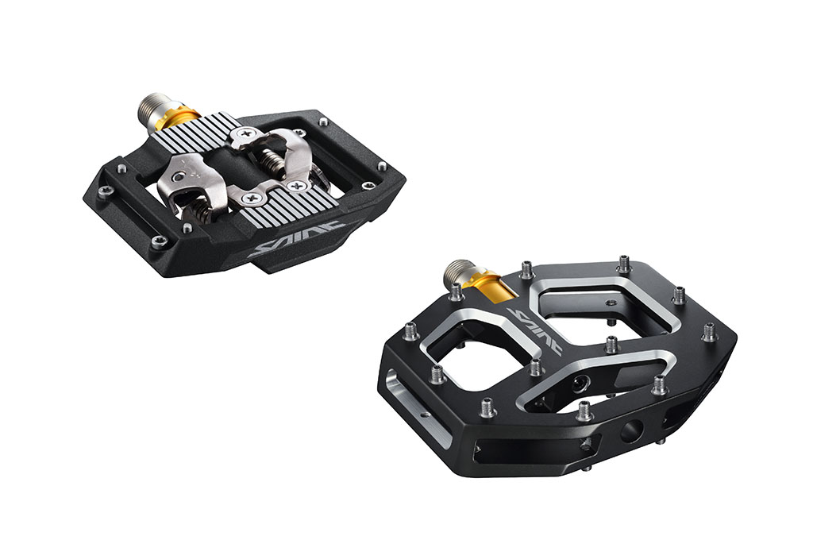

Manutenzione Pedali MTB
I pedali sono il punto di contatto tra te e la bici. Ecco come mantenerli al meglio:
- Pulizia: rimuovi fango e sporco dopo ogni uscita con spazzolino e panno.
- Controllo cuscinetti: verifica che i pedali girino fluidamente senza giochi o rumori.
- Lubrificazione: applica grasso specifico sui cuscinetti se necessario.
- Fissaggi: assicurati che i pedali siano ben avvitati alle pedivelle.
- Sostituzione: se i pedali sono usurati o danneggiati, valuta la sostituzione.

Pedali ben mantenuti migliorano il controllo e la sicurezza durante la pedalata.
← Torna alla pagina Manutenzione